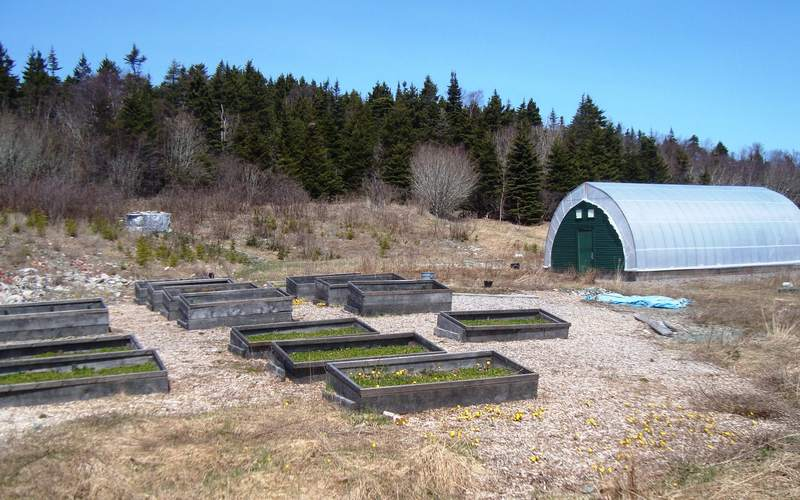
What Would It Take for a Family to Stop Buying Groceries for 3 Years?
A look at the self-sustaining homestead dream, and the parts of it you can start this week.
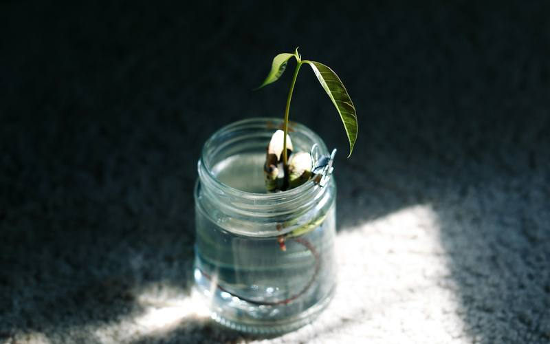
How to Grow Kratky Lettuce in a Mason Jar
A plain-spoken, step-by-step guide to growing one head of lettuce in a mason jar with the Kratky method: no pump, no power, no soil.
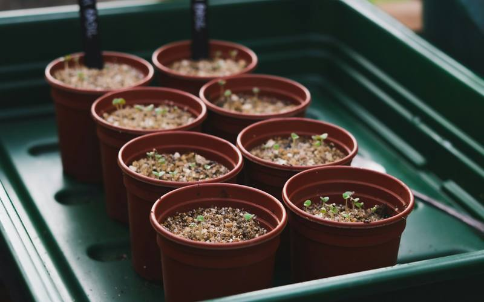
Building a Hydroponic Starter Setup for Under $50
How to put together a simple, low-cost Kratky or DWC starter setup, what to buy, what to reuse from home, and where beginners overspend.
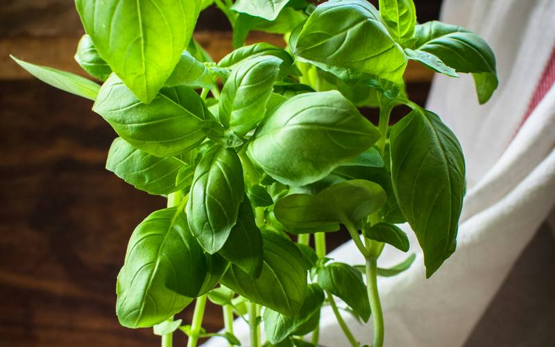
5 Easiest Crops for First-Time Hydroponic Growers
The five most forgiving crops for beginner hydroponics, from loose-leaf lettuce to basil, with tips for each and notes on growing them in Texas heat.
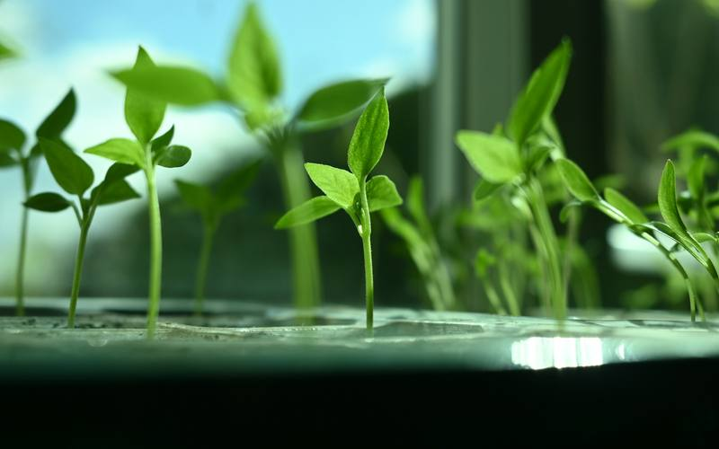
Beginner pH and EC/PPM Explained (Without the Chemistry Class)
What pH, EC, and PPM mean in hydroponics, why they matter, the ranges extension specialists recommend for leafy greens, and how to test on a budget.
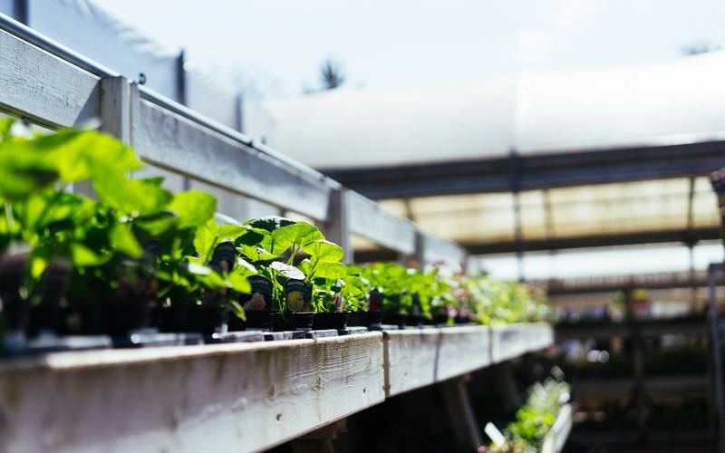
Keeping Hydroponic Reservoirs Cool in a Texas Summer
Practical, low-cost ways to keep nutrient water cool when Texas heat hits, plus why warm water causes problems for roots and which crops to grow in summer.
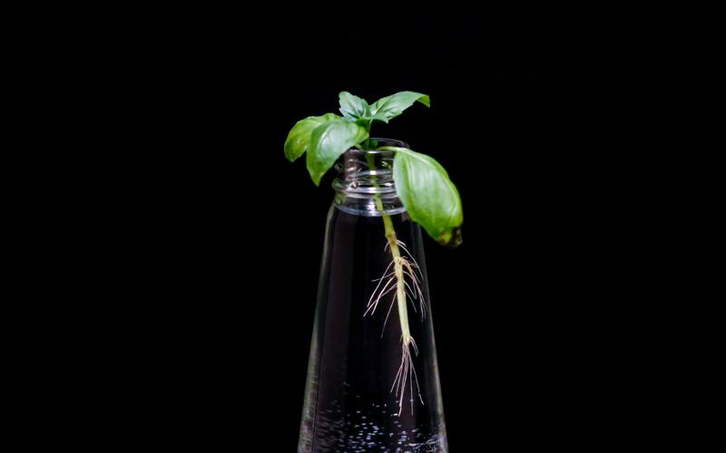
Fixing Root Rot and Algae in Beginner Hydroponics
How to spot root rot and algae in jars, totes, and buckets, what usually causes them, and simple steps to prevent and recover from both.
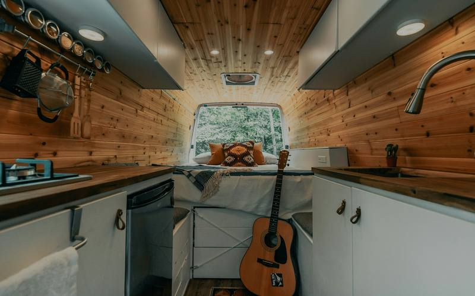
Hydroponics in an RV or Tiny Home: A Practical Guide
How to grow fresh greens hydroponically in an RV, tiny home, or mobile home: choosing systems that handle small spaces, movement, heat, and limited power.
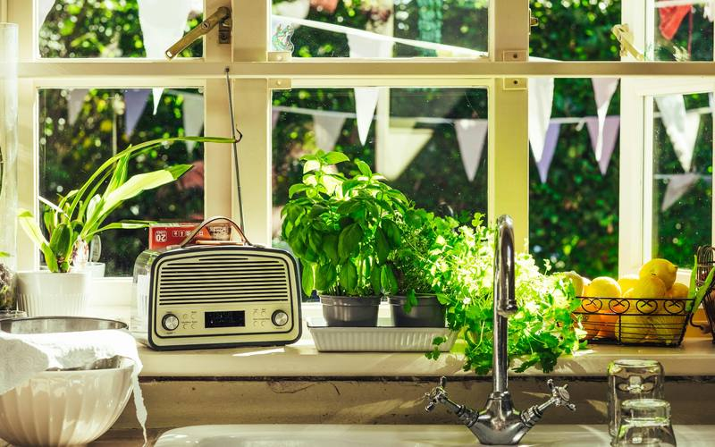
Balcony and Window Hydroponics for Small Spaces
How to grow hydroponic greens and herbs on a balcony or windowsill, including sun, heat, wind, rain, and the simple systems that fit best.
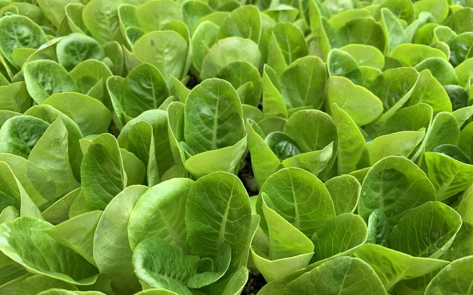
Succession Planting for Nonstop Hydroponic Salad
How to stagger seed starts so your hydroponic setup gives you a steady supply of lettuce and greens instead of a feast-or-famine harvest.
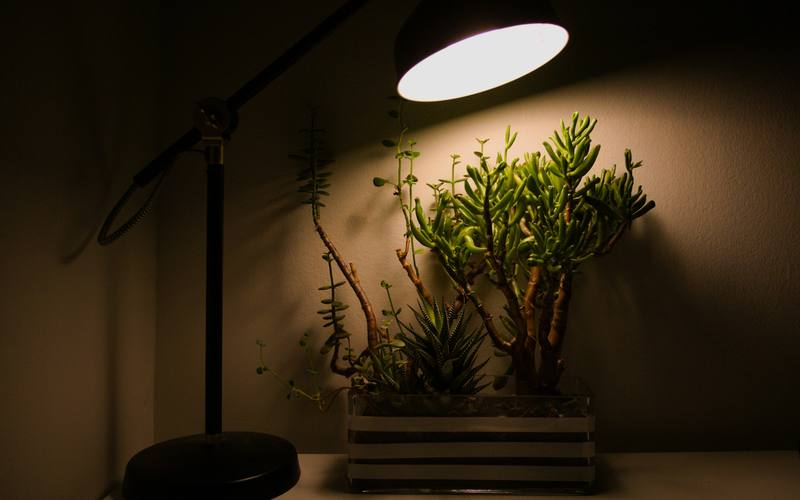
Choosing Grow Lights on a Budget
A plain-language guide to picking an affordable grow light for hydroponic greens and herbs: what matters, what to ignore, and how to set it up.
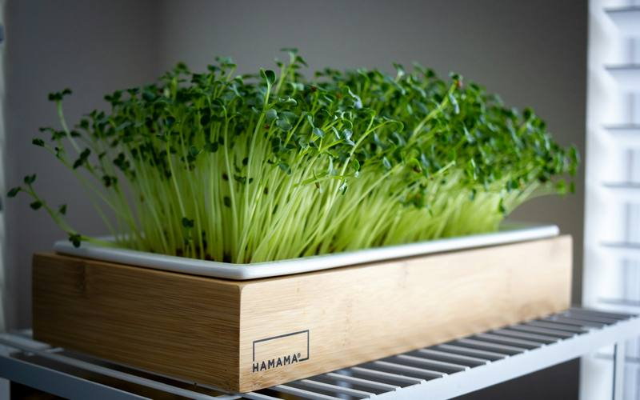
Grow Your First Tray of Microgreens
A simple, step-by-step guide to growing your first tray of microgreens on a windowsill or under a shop light, based on extension guidance.
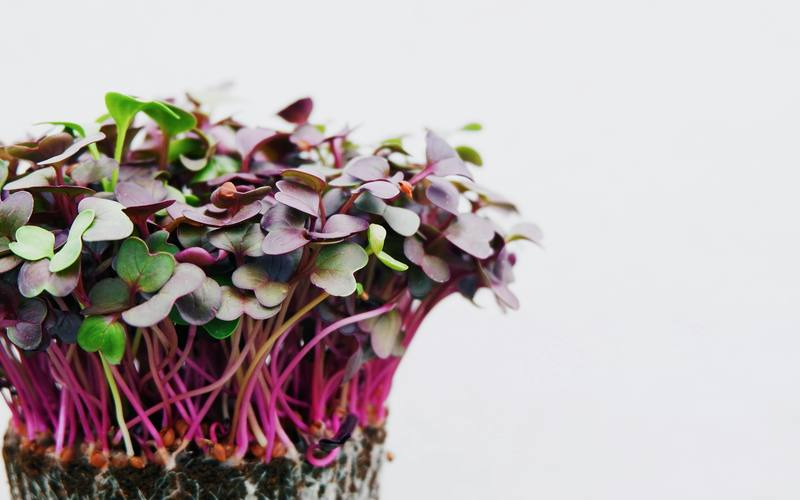
The Easiest Microgreens for Beginners
Which microgreens to grow first: fast, forgiving varieties like radish, broccoli, and mustard, plus a few to save for later.